QUEM SOMOS
Somos uma equipe de robótica participante de competições nacionais e internacionais da FIRST Robotics Competition (FRC). "Ser da robótica é muito mais que montar robôs e fazer viagens para competições, ser da robótica é mudar nossa comunidade trazendo criatividade, tecnologia, oportunidade e inovação. Grandes projetos para a evolução mundial de forma positiva e significativa envolvendo sustentabilidade, empatia, trabalho em equipe e comunicação."
THE ROOSTERS
A equipe Manna Roosters nasceu em Medianeira, no oeste do Paraná, em um colégio particular, junto com a equipe irmã Strike. A Manna Roosters fez sua estreia em competições nos Estados Unidos em março de 2018. Na temporada Deep Space, em 2019, a equipe participou da regional de Istambul, Turquia, onde se destacou ao chegar às finais de aliança. Em 2020, durante a temporada Infinite Recharge, a mentora das equipes, decidiu focar em seus próprios projetos com a Strike e transferiu a Manna Roosters para o técnico Thadeu Miqueletto, através de uma reunião, iniciando sua nova fase em Curitiba.

Essa mudança também trouxe uma nova identidade visual para a equipe. a equipe passou por uma reestruturação e contou com alunos do Colégio Estadual Padre Cláudio Morelli. Nesse ano, participaram da regional de Los Angeles, onde impressionaram ao alcançar o top 15 com um robô que custou apenas 2 dólares. Após esse sucesso, a equipe ficou inativa devido à pandemia de COVID-19. Na temporada Charge Up, em 2023, com o início das competições de FRC no Brasil, a equipe voltou à ativa e participou do Open Brazil no Torneio Nacional Sesi de Robótica, realizado no Estádio Mané Garrincha em Brasília-DF. Essa foi a melhor participação da equipe desde sua transferência para Curitiba, com um 11º lugar entre 42 equipes e uma vaga nas oitavas de final, avançando até as semifinais nas alianças.
Em 2024, a equipe Manna Roosters 7033 também competiu no Torneio Nacional Sesi de Robótica em Brasília-DF e participou de uma competição Off-Season em Cuiabá-MT, onde teve um desempenho excepcional, conquistando os prêmios de Aliança Finalista e Inovação. O prêmio de Aliança Finalista é concedido à equipe que chega à final de uma competição, reconhecendo sua habilidade e desempenho excepcionais. Já o prêmio de Inovação é destinado a equipes que se destacam pela criatividade e originalidade em suas soluções tecnológicas. A partir do torneio em Brasília-DF, a equipe passou a ser reconhecida como "Manna Roosters", destacando-se pela sua associação com a instituição "Manna Team".
NOSSA MISSÃO
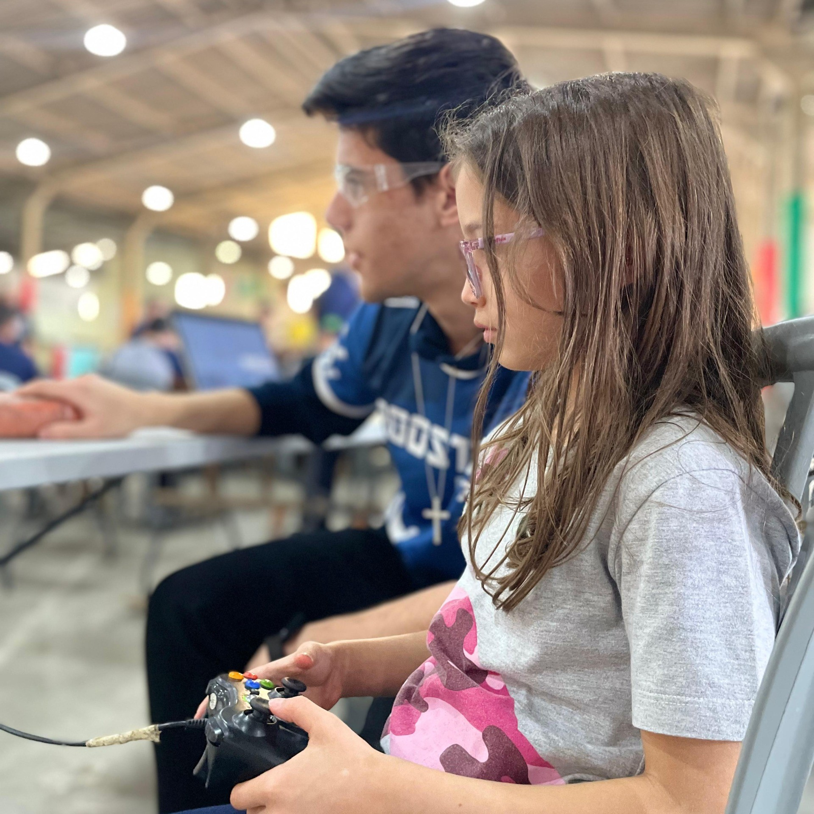
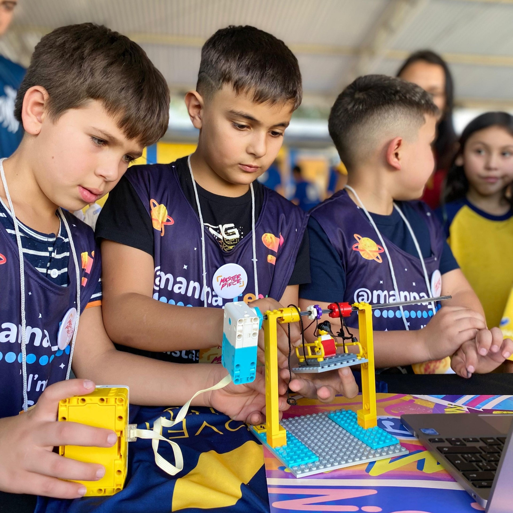
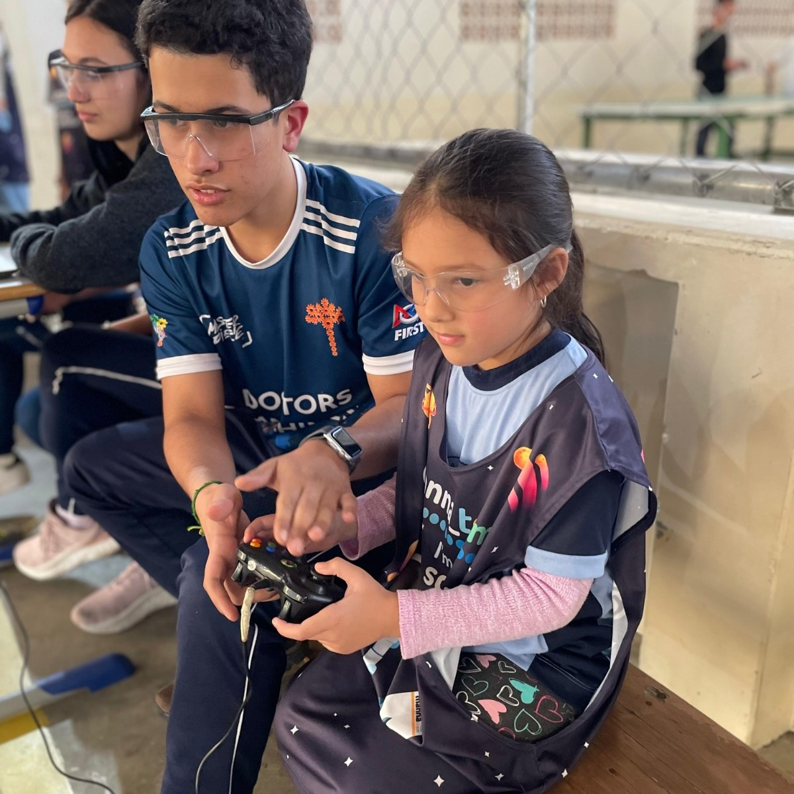
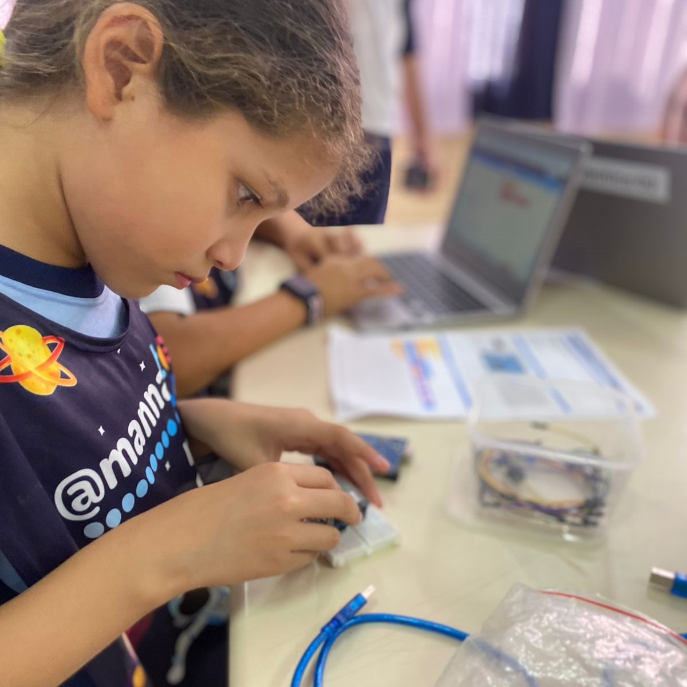
A nossa missão é disseminar todos os valores da FIRST. Sabemos que um dos valores essenciais é o trabalho em equipe, e que sem ele nada disso seria possível. Queremos sempre transmitir tudo o que sabemos sobre tecnologia e passar esse conhecimento para pessoas que não têm contato diário com essas inovações.
A FIRST Robotics Competition valoriza a descoberta e a inovação, promovendo a inclusão e o trabalho em equipe para transformar o mundo através da tecnologia. Seus projetos, além de desenvolverem habilidades em STEAM, também buscam criar soluções de impacto social, assegurando a participação de todos os jovens, independentemente de suas origens ou desafios.
O QUE É O MANNA?
O Manna é o maior ecossistema de ensino, pesquisa, extensão e inovação em Tecnologias Exponenciais, aquelas que contribuem para mudanças rápidas na sociedade, tais como: Internet das Coisas (do inglês, Internet of Things, conhecido como IoT), Internet dos Drones (do inglês, Internet of Drones, conhecido como IoD), Internet Robóticas das Coisas (do inglês, Internet of Robotic Things, conhecido como IoRT), Internet de Todas as Coisas (do inglês, Internet of EveryThings, conhecido como IoE) - próteses biônicas e interface cérebro computador, Inteligência Artificial (IA), Jogos, Computação Quântica com vistas a diferentes cenários e mercados, bem como na área de Educação 5.0 - onde o grupo é pioneiro em pesquisas e práticas no mundo.
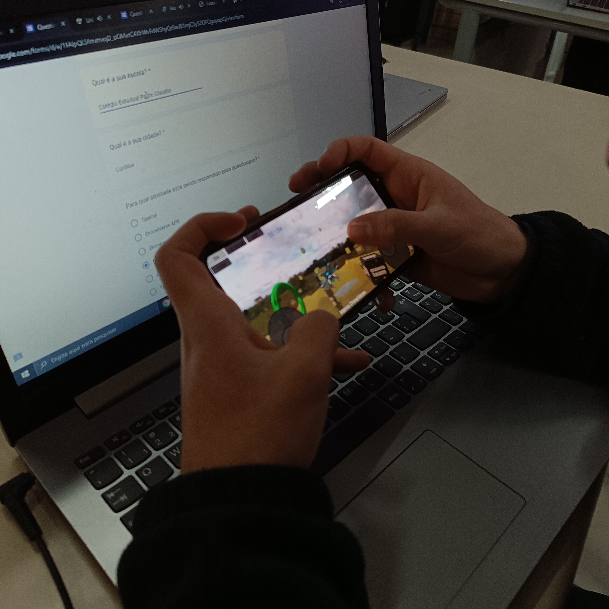
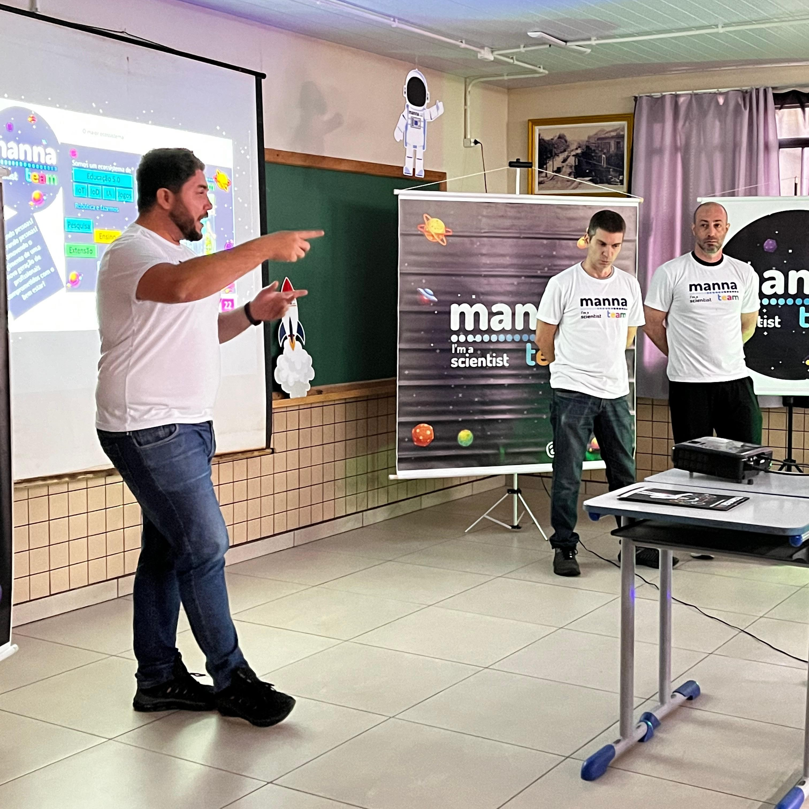
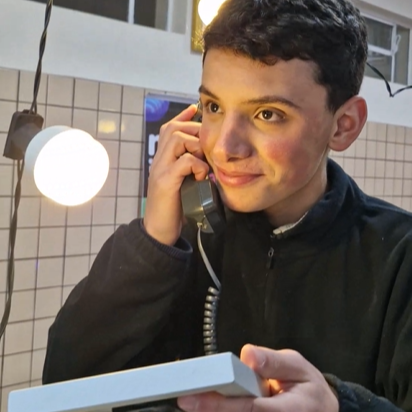
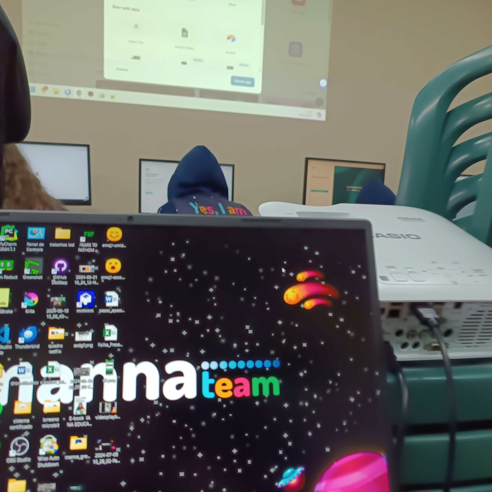
PATROCINADORES
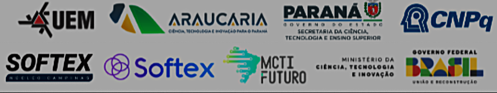
GERAÇÕES
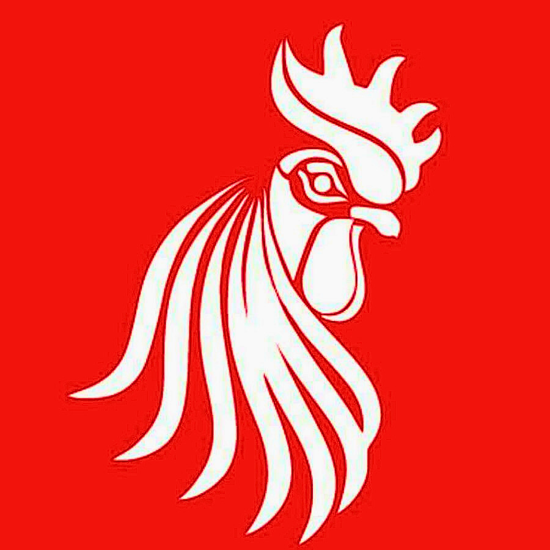
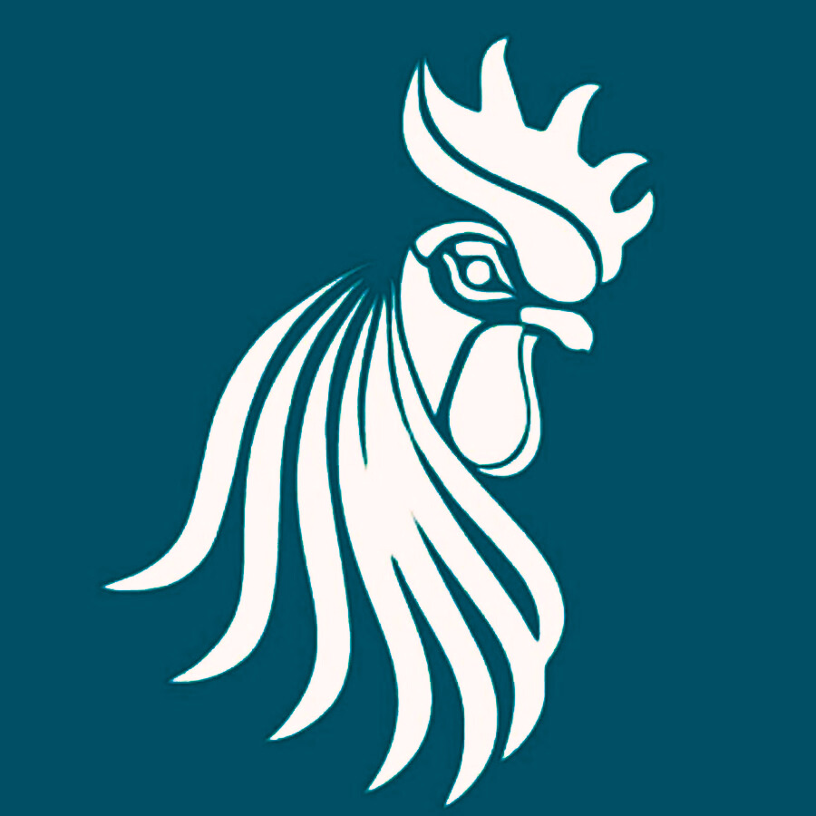
2O17
2O2O
2O24
Nossa equipe foi fundada em 2017, na cidade de Medianeira. Com o tempo, percebemos que essa localização não era a mais adequada para o nosso crescimento. Assim, sob a liderança do professor Thadeu Miqueletto, transferimos nossas atividades para Curitiba, no Colégio Estadual Padre Cláudio Morelli. Com essa mudança, alteramos as cores da equipe, passando do vermelho para o azul.
Em 2023, recebemos o convite para integrar a Instituição MANNA Team, iniciando uma nova fase. Com essa transição, novamente atualizamos nossa identidade visual, adotando o preto como a cor oficial da equipe.
Assim como o galo que anuncia um novo amanhecer, buscamos mostrar que, apesar dos desafios, estamos sempre prontos para superá-los. Nosso compromisso vai além da competição: queremos inovar, encontrar soluções para as necessidades da nossa comunidade e inspirar outros jovens a ingressar no mundo da ciência, tecnologia, engenharia e matemática (STEM).
A Manna Roosters é mais do que uma equipe de robótica – somos agentes de transformação, promovendo o conhecimento e o impacto social por meio da tecnologia!
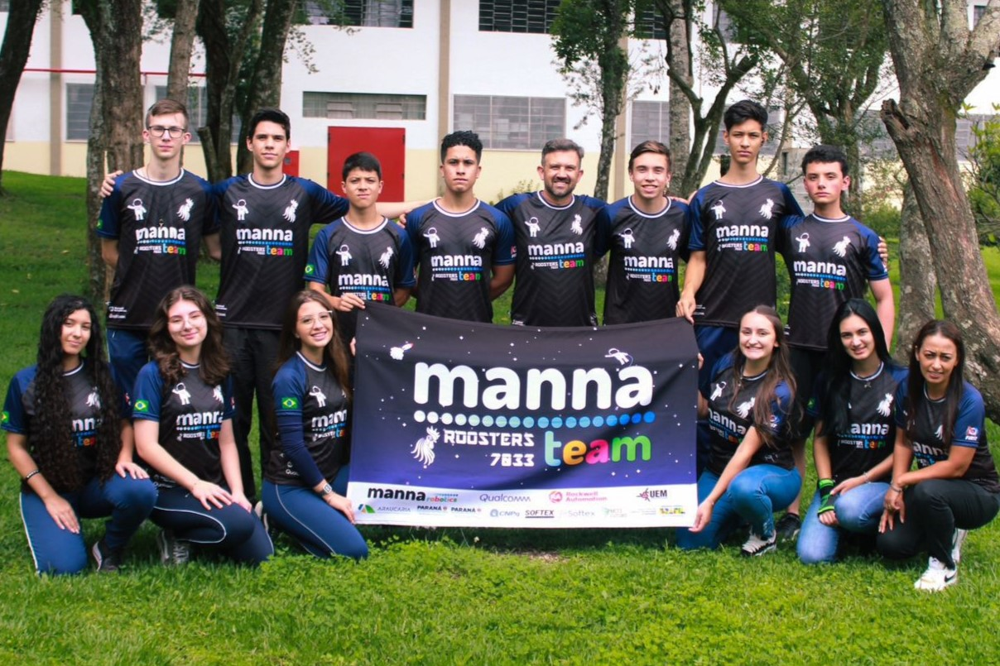